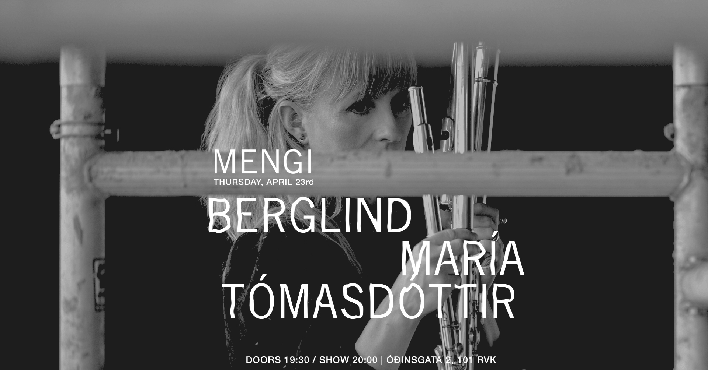
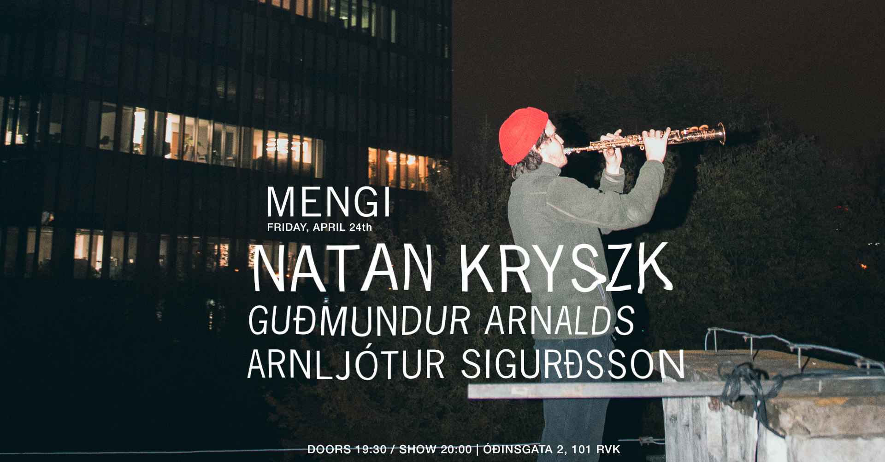
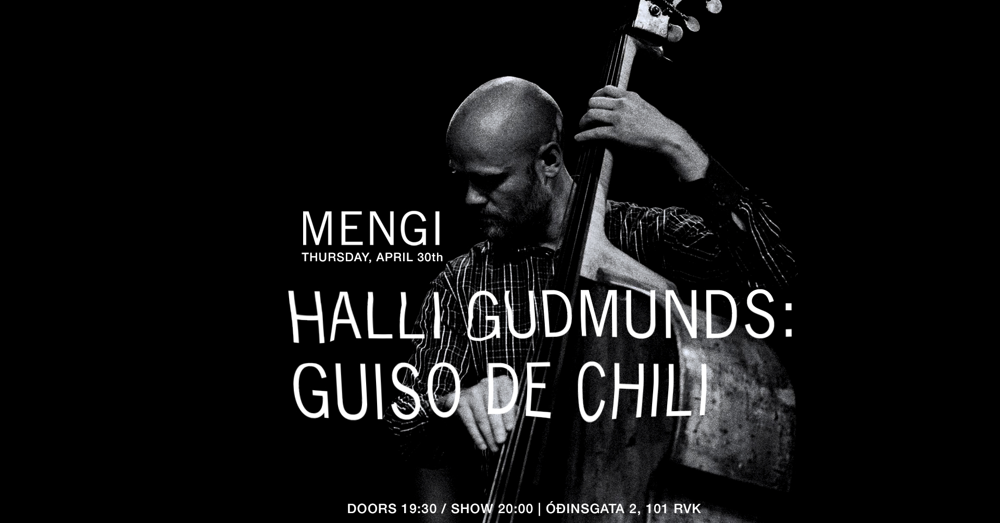

Upcoming Events

THU 23.04 Berglind María Tómasdóttir feat. Júlía Mogensen
Tickets Thursday, April 23rd BERGLIND MARÍA TÓMASDÓTTIR feat. JÚLÍA MOGENSEN doors 19:30 / show 20:00 2500kr / 2000kr students / pay what u can Berglind María Tómasdóttir leikur nýtt og eldra efni í bland við spuna og mögulega eitthvað alveg óvænt. Flautur og fleiri hljóðgjafar koma við sögu. Sérlegur gestur á tónleikunum er Júlía Mogensen, sellóleikari og dórófónleikari. Berglind María Tómasdóttir er flautuleikari og tónskáld sem vinnur þvert á miðla. Í verkum sínum kannar hún ímyndir, erkitýpur og tónlist sem félagslegt fyrirbæri. Sem flautuleikari hefur Berglind komið fram víðs vegar um heim og leikið inn á fjölda hljóðrita, meðal annars sem einleikari ásamt Sinfóníuhljómsveit Íslands undir stjórn Vladimir Ashkenazy. Plata hennar Ethereality var valin plata ársins á Íslensku tónlistarverðlaununum 2022. Verk Berglindar hafa verið pöntuð og flutt á vegum Flautusamtaka Bandaríkjanna, Norrænna músíkdaga, Sequences, Myrkra músíkdaga og Listahátíðar í Reykjavík. Berglind stundaði nám í flautuleik við Tónlistarskólann í Reykjavík og Konunglega danska konservatoríið í Kaupmannahöfn og lauk doktorsprófi frá Kaliforníuháskóla í San Diego árið 2013. Berglind er prófessor við Listaháskóla Íslands. https://berglindtomasdottir.com https://berglindtomasdottir.bandcamp.com/ /// Berglind María Tómasdóttir presents a program blending new and older works with elements of improvisation, and perhaps a few surprises along the way. The performance highlights flutes alongside a variety of other sounding instruments. Special guest Júlía Mogensen joins on cello and halldorophone. Berglind María Tómasdóttir is a flutist and a composer living in Reykjavík, Iceland. In her work she frequently explores identities, archetypes and music as a social phenomenon through different mediums. Berglind has worked with composers such as Björk, Anna Thorvaldsdóttir, Peter Ablinger and Carolyn Chen, and received commissions from Dark Music Days, the National Flute Association, Sequences Art Festival, Reykjavík Arts Festival and Nordic Music Days to name a few. Her album, Ethereality, won the 2022 Icelandic Music Awards as the album of the year. Berglind Tómasdóttir holds degrees in flute playing from Reykjavik College of Music and the Royal Danish Music Conservatory in Copenhagen and a DMA from University of California, San Diego. Berglind is a professor at Iceland University of the Arts. https://berglindtomasdottir.com https://berglindtomasdottir.bandcamp.com/

FRI 24.04 Natan Kryszk / Guðmundur Arnalds / Arnljótur Sigurðsson
Tickets Friday, April 24th NATAN KRYSZK GUÐMUNDUR ARNALDS ARNLJÓTUR SIGURÐSSON doors 19:30 / show 20:00 2500kr / 2000kr students / pay what u can Natan Kryszk – Saxophonist / sculptor / sound artist / visual artist. Author of music for theatre and dance performances. Co-founder of the Pracownia Wschodnia gallery. Collaborates with the Biuro Wystaw gallery and the Foundation of Polish Modern Art. Interested in creating works at the intersection of various sensibilities and artistic media. Co-founder of the Pokusa trio (Olter/Bryndal/Kryszk). Founder of the “Robert Diabeł” band playing music inspired by Giacomo Meyerbeer’s opera. He has played with such wonderful people as Macio Moretti, Mikołaj Trzaska, Michał Aftyka, Kuba Więcek, Jerzy Mączyński, Maja Laura Jaryczewska, Beluga Ryba, TONFA, Baasch, Szelest Spadających Papierków, Rosa Vertov, Jesień, Małgorzata Wrzosek and many others. He is the author of music for theatre and dance performances by Weronika Pelczyńska, Patrycja Kowańska, Izabela Niepokój, Justyna Sobczyk, Teatr 21, Kuba Kowalski, Daria Kopiec and Marta Ziółek. IG – https://www.instagram.com/natan.kryszk/ BNDCMP – https://natankryszk.bandcamp.com/ YOUTUBE – https://www.youtube.com/@natankryszk
SAT 25.04 Austin Larkin / John McCowen
Tickets Saturday, April 25th AUSTIN LARKIN - solo violin JOHN McCOWEN - solo clarinet doors 19:30 / show 20:00 2500kr / 2000kr students / pay what u can Austin Larkin is a composer primarily working with violin, flute, bells, and sirens. His practice is informed by research into dimensions of vibrating bodies. Larkin's solo violin work stems from the physicality of the violin, a language of gesture unfolded in the shared space of the listener, conferring an intense gravity within performance. Preferring the experience of acoustic sound, the directness of these interlacing gestures carry the energy of its materialization. He studied sound with Eyvind Kang, Jessika Kenney, and Jarrad Powell, as well as karawitan at ISI Yogyakarta. Ongoing collaborations involve Tongue Depressor, Lori Goldston, Sean Meehan, John McCowen, and Matt Wellins in installation/performance as Echo Permanent Wave. His recent solo releases include "Melody enmeshes itself with the passing clouds" (2025) and "Violin Liquid Phases" (2022). John McCowen’s musical life has become an obsession with discovering a polyphonic language on a historically monophonic instrument - the clarinet. This has led him to a unique acoustic vocabulary that is similar to a shifting soundscape of electronic feedback. John's multiphonic approach is based in drones, difference tones, and beating harmonics as a means to showcase the compositional potential within a single, acoustic sound source. His work has been described by The New Yorker (Steve Smith) as “the sonic equivalent of microscopic life viewed on a slide” and “an astonishing demonstration of pure sound and human will” by The Wire (Phil Freeman).

THU 30.04 Halli Guðmunds: Guiso de Chili
Tickets Thursday, April 30th HALLI GUÐMUNDS: GUISO DE CHILI doors 19:30 / show 20:00 2500kr / 2000kr students / pay what u can Guido de chili or Chili Stew is Halli Gudmunds New York inspired cuban ensemble, where he mixes icelandic and new york avant garde vibes into cuban based music. Halli has been on an latin music excursion on his last few albums and Guiso de chili is the next step. The band is going into the studio with the excellent engineer producer Marc Urselli in may to record the music they will present for the first time in Mengi. Halli Gudmunds double bass/compositions/words Valbjörn Snær Lillendahl guitars Tómas Jónsson orgel/synthar Magnus Trygvason Eliasen drums Einar Schewing percussion ------- Guiso de chili, Chili stew, eða chili kássa er nafnið á New York innblásnu Cuban verkefni bassaleikarans Halla Guðmunds, þar sem hann blandar saman íslenskum og New York avant garde stefnum inn í cubanskan tónlistarstíl Halli hefur verið á ferðalagi um suður ameríska tónlist á síðustu plötum sínum og Chili Stew er hans næsta skref Hljómsveitin er að fara í hljóðver með einum af virtustu upptökumönnum/producentum heimsins í dag, Marc Urselli, í maí og verður þetta í fyrsta skiptið sem tónlistin er flutt opinberlegs í endanlegum útfærslum. Guiso de chili - Chili Stew Halli Guðmunds kontrabassi/ton/textahöfundur Valbjörn Snær Lillendahl gítarar Tómas Jónsson orgel/synthar Magnus Trygvason Eliasen trommur Einar Schewing slagverk